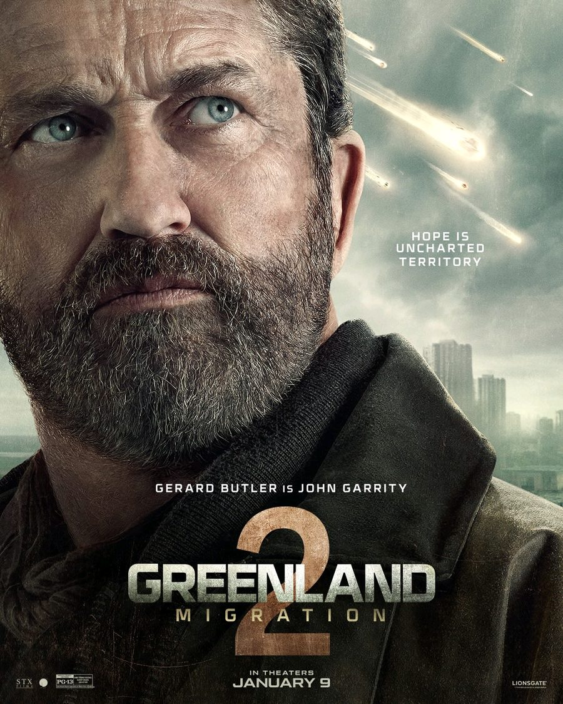

From law graduate to Hollywood action hero
Few actors have a path as unlikely as Gerard Butler's. Before he shouted as a Spartan king, he was a young Scot headed for a career in law.
Early life
Gerard Butler was born on 13 November 1969 in Paisley, Scotland. He grew up in Scotland and studied law at the University of Glasgow, where he was known as much for his charisma as for his grades. By his own account, his legal career ended abruptly just before he qualified. He took it as a sign to chase the dream he had been quietly nursing: acting.
The breakthrough
After moving to London and working through stage and smaller screen roles, Butler got his first major film lead as Dracula in Dracula 2000. He then took the title role in The Phantom of the Opera (2004), which showed he could sing and carry a romantic lead.
The role that defined him
In 2007, 300 made him a global star. As King Leonidas, he turned one shouted line into a cultural phenomenon and fixed his image as an intense, larger-than-life action lead.
An intense, larger-than-life action lead
Range beyond action
Butler has never stayed in one lane:
- Romantic comedy: P.S. I Love You and The Ugly Truth
- Voice acting: Stoick the Vast in the How to Train Your Dragon films
- Action franchises: the Has Fallen series (Olympus, London and Angel)
- Disaster thrillers: Geostorm and the Greenland films
- Survival action: Plane (2023)
He also co-founded the production company G-BASE, which gives him a hand in shaping the stories he tells.
Greenland 2: Migration
His latest film in this profile is Greenland 2: Migration, released 9 January 2026. He returns as John Garrity, a father protecting his family in a world after catastrophe. The posters, with their tagline "Hope is uncharted territory," show a weathered, grounded Butler. Roman Griffin Davis plays his son, Nathan.

Why he endures
Butler's appeal comes down to sincerity. Whether he is leading an army or protecting his family, he plays his characters with real emotion and grit. His career shows that a detour, or even a career setback, can lead somewhere extraordinary.